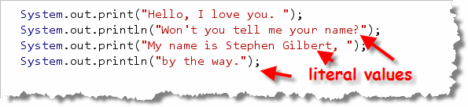
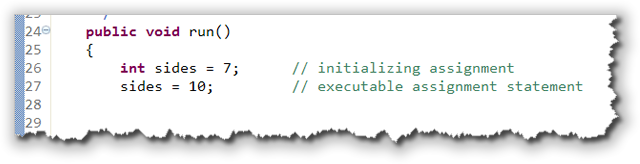

When you call a method, passing one or more arguments,
you supply information that the method uses to carry out its, actions.
In the program which you completed
int the last lecture, MyFirstConsoleProgram,
the print() and println() methods use
the values that you supply—"Hello, I love you.",
"My name is Stephen Gilbert", and "I think I love you."—to
carry out the action of displaying your messages on the screen.

The values passed in this example are called literals, because the values you use appear literally in your source code.Unfortunately, using literal values like this is good only for the simplest programs. Your name obviously isn't Stephen Gilbert, for instance. Wouldn't it be nice if, instead of using literal values, we could create custom values that could "adapt" to your environment as your program runs?
Well, that's what variables are.
Creating Variables
 The formal definition of a variable is:
The formal definition of a variable is:
A named storage area that holds a value
To create a variable, you define it by using a special kind of Java statement called a declaration or definition statement. In Java, all variables must be defined before you can use them.
The syntax (or rule) for defining variables looks like this:
 The elements appearing in gray (the modifier
and the = initial-value parts) are optional. The parts in
red (including the semicolon at the end) are required.
The elements appearing in gray (the modifier
and the = initial-value parts) are optional. The parts in
red (including the semicolon at the end) are required.
Here are some example definitions (they'll make more sense later):

A definition or declaration tells the compiler what kind
of value the storage location should contain (int,
Color), the name of the storage
location, (width, height,
background, and SIZE), and,
optionally, an initial value to store in the location.
Initializing Variables
 A variable is a named "chunk" of memory, but most
of the time, we don't care about the chunk of memory
at all—what we care about is what's inside the
memory. The number stored inside a variable is
called the variable's value. As your program
runs, you can store different numbers inside
the same piece of memory. (That's why we call it a
variable, since its value can vary as the
program runs.)
A variable is a named "chunk" of memory, but most
of the time, we don't care about the chunk of memory
at all—what we care about is what's inside the
memory. The number stored inside a variable is
called the variable's value. As your program
runs, you can store different numbers inside
the same piece of memory. (That's why we call it a
variable, since its value can vary as the
program runs.)
To put a new value in a variable, you use
assignment like this:

Assignment looks like an equation in algebra, but it works a bit differently. The assignment operator copies the value on its right, and stores the copy in the named memory location (the variable) on its left.If his happens when the variable is first declared (line 26), it is an initialization. Initialization gives a starting value to a variable when it is first created.
If this happens after the variable has already been created (line 27), then we have an assignment, which changes the value stored in an existing variable.
How Assignment Works
If you think of a variable as a mailbox, then assignment is something like putting a letter inside the mailbox. With memory, though, each "mailbox: is just big enough to hold exactly one value. When you put a second value into a variable, the one that's there is replaced. (The computer science term for this is a destructive copy.)
Here are some examples using two variables,
myAge and kathysAge.
(Kathy is my wife, so you'll understand that she isn't
too happy when I add a year to her age.)
- The statement
myAge = 67;puts a copy of the value 67 into the variable namedmyAge. - The statement
kathysAge = myAgemakes a copy of the value 67 that is currently stored in the variablemyAge, and then stores that copy in the variablekathysAge. There is no transfer of the value stored inmyAge; the variablemyAgestill has its own copy of the number 67. - The statement
kathysAge = 66, replaces the value 67 that the variable previously held with the new value 66. The old value 67 is overwritten or replaced, not saved.
Notice that the variable kathysAge
varies as the program runs. At one point it
contains the number 67, and, later in the program's
execution, it contains the value 66.
Notice also that the variable myAge
contains the value 67 for the entire length of the
program. Assigning myAge to
kathysAge in line 2 doesn't change
myAge at all.
Data Types of Values and Variables
When we store values in a variable, we can classify
each value by the kind of thing that it is,
just like you can classify the beverages you can
purchase at 7-11. There, for instance, you can get
hot drinks, like coffee or hot chocolate, and cold
drinks, like soda and Slurpies.
 The computer world works in a similar fashion.
Instead of hot and cold, we can store text or
numbers in a variable. We call the kind
of value the value's data type.
The computer world works in a similar fashion.
Instead of hot and cold, we can store text or
numbers in a variable. We call the kind
of value the value's data type.
Here are some examples:
 The values stored in
The values stored in PI and myAge
are both numbers, but they are
different kinds of numbers, just like coffee
and hot-chocolate are both hot drinks, but different
kinds of hot drinks. PI contains a
real number, with a fractional part, while
myAge holds a whole number with
no fractional part.
In contrast, the variable named myStreetNumber
does not contain a number. Instead, it contains
a sequence of three characters: the character "5"
followed by the character "7" followed again by the
character "5". In programming, we call such a sequence of
text characters, enclosed in double quotes, a
string literal.
The major difference between the numeric types
stored in the variables PI and
myAge, and the string types stored in the
variable myStreetNumber, is that you
can't use myStreetNumber as part of an
arithmetic formula or expression.
We'll look at Java's integer (whole number) types and
Java's real (floating-point) numbers later in this lesson.
We'll also look at one of Java's object types, the
String class, which we'll use to store
text data.
Variable Scope
You can define variables in two places: inside the body of a method, or inside the class body, but outside of any method. Variable that are defined inside a method are called local variables, and variables defined outside of a method, but inside the class, are called instance variables.
We will be using local variables exclusively, until we get to classes in Week 5.
Local Variables
Local variables, (those defined inside of a method),
can only be used
inside the method where they were created.
Both of the variables area and radius
which are defined inside the ComputeArea program:
 are examples of
local variables, since they are defined
inside the
are examples of
local variables, since they are defined
inside the main() method.
Local variables are not given an initial value when they are created; you must provide an initial value explicitly, or assign a value before you use the variable. If you attempt to use an un-initialized local variable, the compiler will refuse to compile your code.
Local variables also don't use modifiers like static,
public, or private. You can, though,
use the modifier final to make a local variable
constant.
Constants
Which of these two lines of code for calculating the total price
of a purchase are easier to understand?
 Obviously, in the second instance, you have no hint as to
what the number .875 actually means; it might be a
tax, a markup, a surcharge, or something else. You might use a
comment to let readers know that you're adding the sales
tax, and that would certainly help.
Obviously, in the second instance, you have no hint as to
what the number .875 actually means; it might be a
tax, a markup, a surcharge, or something else. You might use a
comment to let readers know that you're adding the sales
tax, and that would certainly help.
Because there is no meaning associated with such "raw" numbers,
a reader unfamiliar with your code can't easily tell what the
literal number .875 means. For
this reason, such literals are often called magic numbers.
A comment won't help you, though, when the tax rate
changes from 8¾% to 7¼% (we can always hope,
huh?) and you have to change all of your programs. When that
happens, you'll find yourself searching through your source
code looking for the number .875 and asking yourself, "Is
this the sales-tax-rate, or something else?". You're also
likely to change some, and miss a few others.
Of course, those of you who passed the fifth grade on the first try
will point out that 8¾% is actually .0875,
not .875. But, that's kind of the point! If you
use magic numbers in your code, then someone inspecting your program
doesn't know what the .875 means. If you create
a named constant, then a mistake like writing:
final double SALES_TAX_RATE = .875;
becomes much easier to catch.
Rather than using magic numbers, you should always use constants. A constant is just like a variable, (that is, it is a named storage area that holds a value), but Java prevents you from accidentally changing it by assigning it a different value.
Defining Constants
Although you can create constants inside a method, that's actually not usually done. After all, if a value is constant, it's not going to have a different value from method to method.
Instead, to define a constant, you use the three modifiers
public, static and final
before the type name, and provide a value
using the initializing assignment operator. Since
constants can't be changed, you can't give it a
value later using the regular assignment operator.
Place your constant definition outside of any method, but inside the class body. It can appear at the beginning or the end of the class; that doesn't make any difference.
Here's a program named TempConverter using constants:
 To make it clear which names represent variables, (and thus can
be changed), and which represent constants, the
To make it clear which names represent variables, (and thus can
be changed), and which represent constants, the TempConverter
program CAPITALIZES the names of the two constants. This is a
convention that almost all Java programs follow, (and certainly
one that we'll follow in this class.)